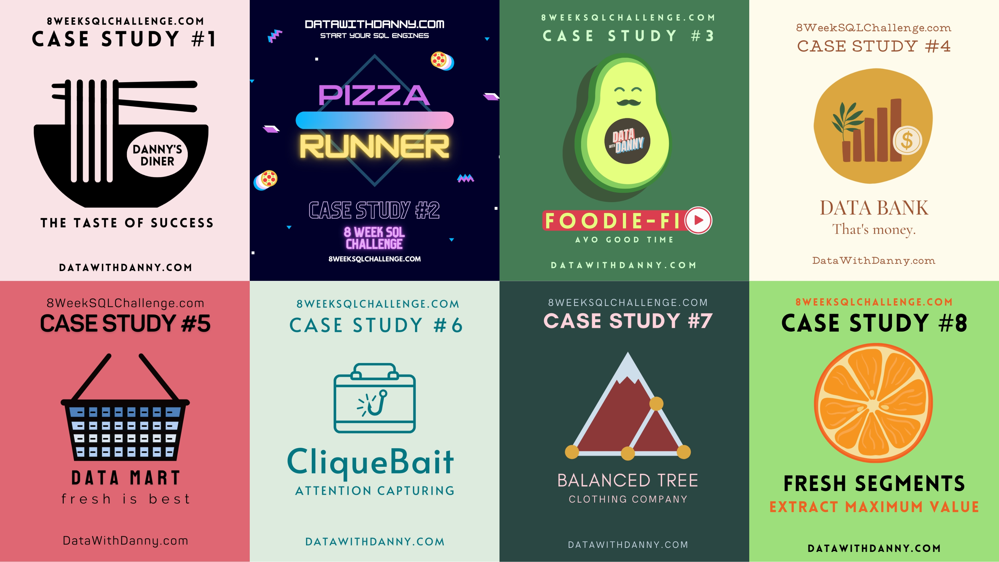
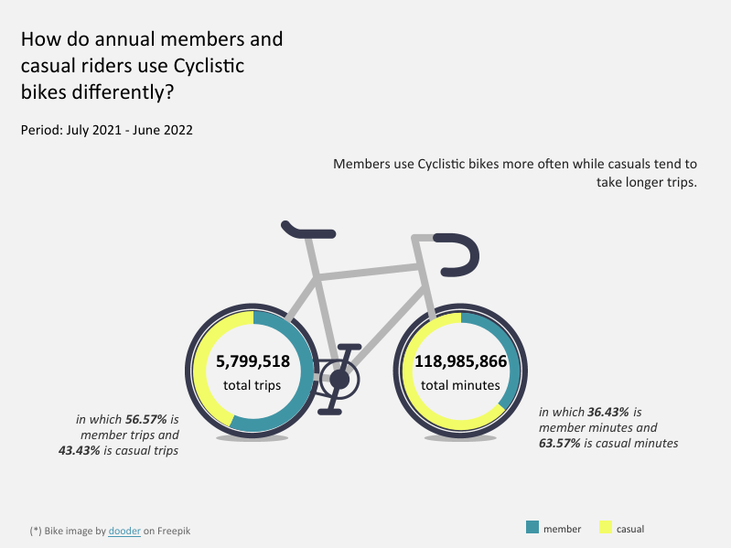
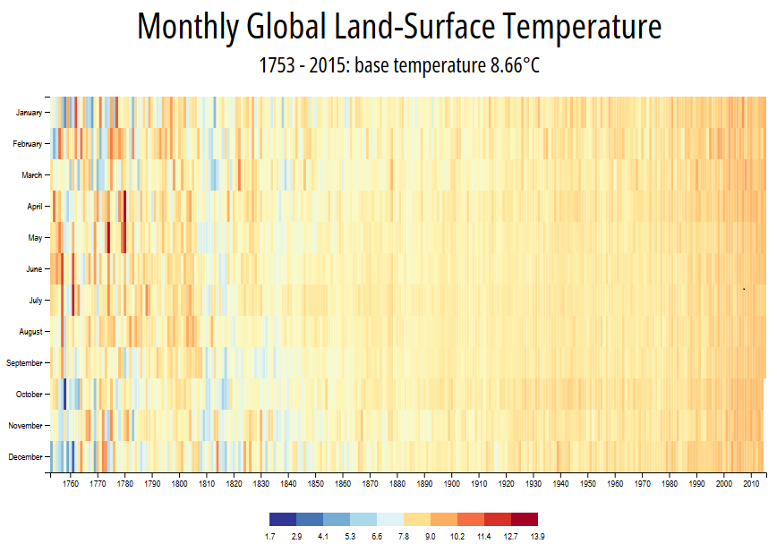

8 Week SQL Challenge
Using SQL skills and techniques required for data analysis to solve multiple realistic end to end case studies.

Cyclistic Bike-Share Case Study
Analyzing Cyclistic’s historical trip data to identify trends in user behavior and providing insights into how annual members and casual riders use Cyclistic bikes differently.

Automatidata Taxi Fares Estimation
Developing a regression model that helps estimate taxi fares before the ride based on New York's taxi trip record.
Data Visualization with D3
Building charts, graphs, and maps to present different types of data with the D3.js library.
